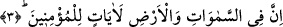

gözü, gönlü Kur’an’la dopdolu olmalıdır.
Ebû Bekir Şiblî (k.s.)’dan şöyle rivâyet edilmiştir:
“Ebû Bekir Şiblî (k.s.) Bağdad pazarından geçerken üzerinde sevgilinin adının yazılı
olduğu bir kâğıdın yere düştüğünü gördü. Şiblî onu halkın ayağı altında görünce kalbine
bir ızdırap düştü. O kâğıdı yerden aldı, öptü, güzel kokular sürdü ve onu kendinde
sakladı. Bazan onu sinesinde saklar, zulmet ve gafleti izâle eder, bazan gözüne koyar,
göz nûrunu çoğaltırdı. Kâbe’ye gitmek maksadıyla Bağdad’dan ayrılıncaya kadar bu
böyle devam etti.
Bağdad’dan ayrılıp çöle yöneldi. O kâğıdı da yanına almıştı. Onu kendisine rehber
etti. Çölde yalnız, kimsesiz ve yol azığı olmayan bir genç gördü. Bu genç toprağı döşek,
taşı yastık yapmıştı. Göz pınarlarından yaşlar akıtarak gözünü yukarı dikmişti. Şiblî
onun yastığına (taşına) oturdu, (gencin ölmek üzere olduğunu zannederek) yanındaki
kâğıdı onun gözüne tuttu ve “Ey genç, bu ahid üzere olasın” dedi. Genç istemeyerek
yüzünü çevirdi, bunun üzerine Şiblî; “İnnâ lillah, sekerât ve bu hâlin zorluğu bu gencin
hâlini değiştirecek” dedi. Genç ona yeniden baktı ve şöyle dedi; “Ey Şiblî devamlı hatâ
ediyorsun, senin bu kâğıttan görüp okuduğunu biz gönül sayfasından görüyor, gönül
sayfasından okuyoruz.”
Fakîr (Bursevî) şöyle der:
Benim sevgilimin aşkının sırrı benim canımda gizlidir.
Benim canımın sırrını da sevgilimden başka kimse bilmez.
3. Şüphesiz göklerde ve yerde inananlar için birçok âyetler vardır.
“Şüphesiz” göklerin ve yerin, “göklerde ve yerde” olan yıldızlar, dağlar, denizler vb.
kudret eserlerinin yaratılmasında “inananlar için ibretler”, tasdik ehli için rubûbiyet
şâhidleri, tevfik ehli için ulûhiyet delilleri olan âyetler “vardır”.
Bu âyet ve delillerden yalnız müminler faydalandığı için özel olarak müminler
zikredilmiştir. Zira müminler mahlûk ile hâlıka, masnû ile sânia; yâni yaratılanla
yaratana, eserden müessire istidlâl ederek Allah’ın birliğine ulaşmaktadırlar. Bu,
îmânda ilk kapıdır. Bunun için îmân, îkân üzerine takdim edilmiştir. Belki de burada
muzâf olan “halk/yaratma” kelimesinin hazfedilmesi, bundan sonraki âyette ise ispat
edilmesi şunun içindir; her ne kadar gökler ve yer yaratılmış olsalar da yaratılışları
insanların müşâhedesine sunulmamıştır.
Allah Teâlâ şöyle buyuruyor: “Ben onları ne göklerin, ne de yerin yaratılmasında
şâhid/hazır bulundurdum.” (Kehf, 18/51). İnsanlar ve diğer canlıların yaratılışı ise
böyle değildir. Yâni bunların yaratılışı insanların müşâhedesine sunulmakta ve bunların